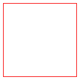
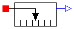
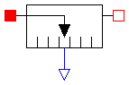

connector Surface_b "1D Heat flow connector (non-filled icon)" SIunits.Temperature T "Absolute temperature"; flow SIunits.HeatFlux q "Heat flowing into element"; end Surface_b;
connector Surface_a "1D Heat flow connector (filled icon)" SIunits.Temperature T "Absolute temperature"; flow SIunits.HeatFlux q "Heat flowing into element"; end Surface_a;

This is the superclass of a 1D component with one surface and one output signal in order to measure a heat flow quantity in the surface and to provide the measured signal as output signal for further processing with the Modelica.Blocks blocks.
Release Notes:
partial model AbsoluteSensor "Device to measure a single connector variable" extends Modelica.Icons.TranslationalSensor; Interfaces.Surface_a surface_a; Modelica.Blocks.Interfaces.OutPort outPort(final n=1); end AbsoluteSensor;

This is a superclass for 1D components with two surfaces and one output signal in order to measure relative quantities between the two surfaces and to provide the measured signal as output signal for further processing with the Modelica.Blocks blocks.
Release Notes:
model RelativeSensor "Device to measure a single relative variable between two surfaces" extends Modelica.Icons.TranslationalSensor; Interfaces.Surface_a surface_a; Interfaces.Surface_b surface_b; Modelica.Blocks.Interfaces.OutPort outPort(final n=1); end RelativeSensor;